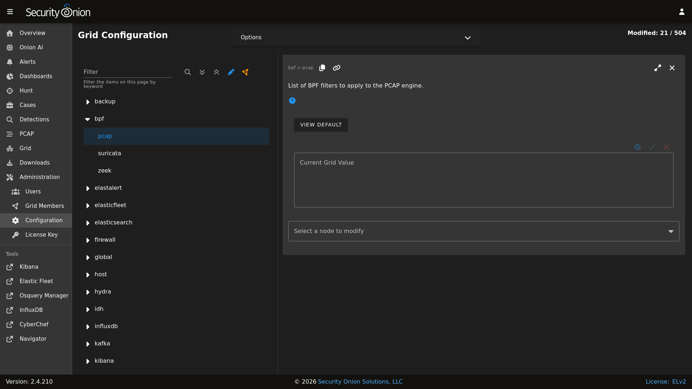

BPF
BPF stands for Berkeley Packet Filter. From https://en.wikipedia.org/wiki/Berkeley_Packet_Filter:
BPF supports filtering packets, allowing a userspace process to supply a filter program that specifies which packets it wants to receive. For example, a tcpdump process may want to receive only packets that initiate a TCP connection. BPF returns only packets that pass the filter that the process supplies. This avoids copying unwanted packets from the operating system kernel to the process, greatly improving performance.
Configuration
You can modify your BPF configuration by going to Administration –> Configuration –> bpf. You can apply BPF configuration to the PCAP engine (either Stenographer or Suricata), Suricata, or Zeek. If you configure a BPF for the PCAP engine and your PCAP engine is Suricata, then it will only apply to the PCAP and NOT alerts or metadata.
{kind=link}

Multiple Conditions
If your BPF contains multiple conditions you can join them with a logical and or logical or.
Here’s an example of joining conditions with a logical and:
not host 192.168.1.2 and not host 192.168.1.3
Here’s an example of joining conditions with a logical or:
host 192.168.1.2 or host 192.168.1.3
VLAN
If you have traffic that has VLAN tags, you can craft a BPF as follows:
<your filter> or (vlan and <your filter>)
Notice that you must include your filter on both sides of the vlan tag.
For example:
(not (host 192.168.1.2 or host 192.168.1.3 or host 192.168.1.4)) or (vlan and (not (host 192.168.1.2 or host 192.168.1.3 or host 192.168.1.4)))
Warning
Adding Comments
To provide more context to your filters, you can add comments. For example:
# lab-east
not host 192.168.1.2 and not host 192.168.1.3 &&
# lab-west
not host 192.168.1.4 or not host 192.168.1.5 &&
# lab-central
not host 192.168.1.6 or not host 192.168.1.27
Troubleshooting BPF using tcpdump
tcpdump as shown in the following articles:More Information
Note